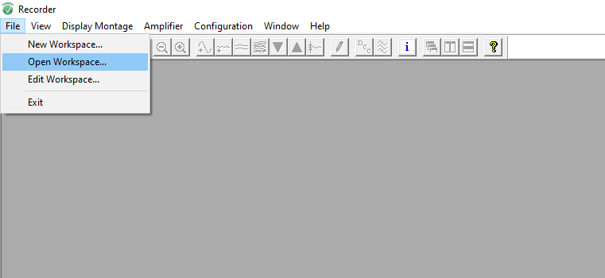

Brain Vision Recorder
Aprire il software Brain Vision Recorder, l’icona si trova sul desktop del pc di registrazione (nella stanza di controllo).
Cliccare su File, quindi su “Open workspace”. A questo punto è necessario caricare il file specifico relativo al montaggio. Questo informerà il software sia di quali sono i canali che registriamo, frequenza di campionamento eventuali filtri del segnale (questi ultimi sconsigliati), così come DOVE salvare i dati.
Ora cliccando sull’icona che raffigura un occhio potremo vedere il segnale (anche se non lo stiamo ancora registrando).
Altre icone:
- Aumenta/riduci la scale dell’asse x (tempo).
- Aumenta/riduci la scala dell’asse y (ampiezza).
- Aumenta/riduci il numero di canali visualizzati a schermo.
- Informazioni relative al montaggio.
Per iniziare a registrare sarà sufficiente fare click sull’icona verde “play”. Si aprirà una finestra di dialogo in cui sarà possibile indicare il nome del file che salveremo (potenzialmente il workspace è già settato per proporre un numero progressivo di partecipante).
La registrazione può essere sospesa temporaneamente facendo click sull’icona blu “pausa” e ripristinata facendo nuovamente click sull’icona verde “play”.
A esperimento terminato, per concludere la registrazione, sarà sufficiente fare click sull’icona rossa “stop”.
Nota: i dati vengono salvati in tempo reale, perciò in caso di qualsiasi interruzione, bug, o quant’altro, non vi sarà una perdita dei dati registrati prima dell’evento critico.